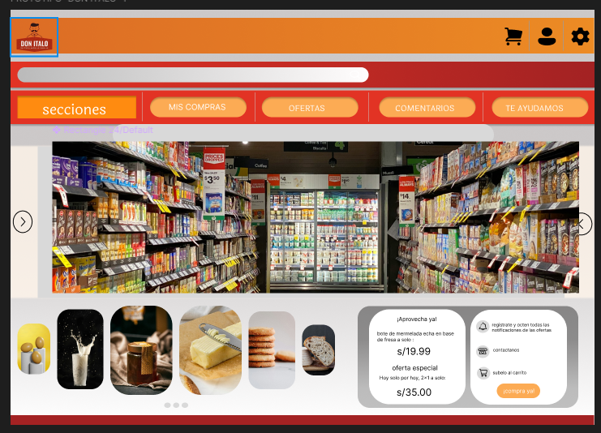
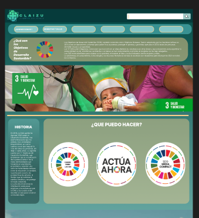
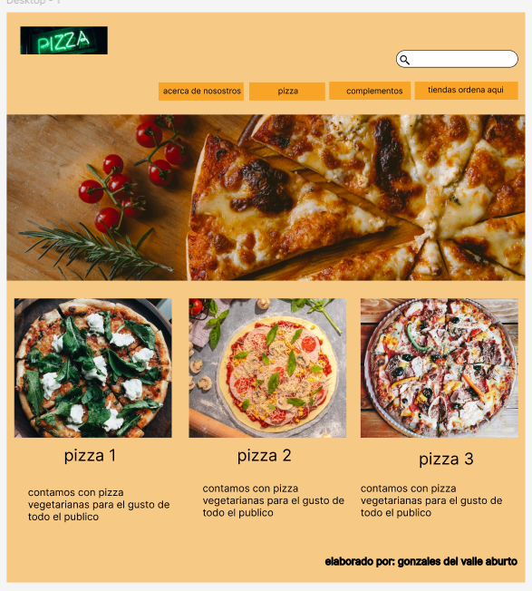

Mis Proyectos

Tienda Online Don Italo
Este es uno de mis proimeros proyectos que tuve que realizar en mi primer semestre junto a la profesora Juana , fue una buena experiencia gracias a ese proyecto logre aprender mucbhas etiquetas de html y css

Pagina sobre el Bienestar y Salud
Este es uno de mis proyecrtos finales de segundo semestre, el cual aun se encuentra en proceso

Proyecto que marco mi vida
Este es un diseño figma , y llame el titulo asi debido a que gracias a esta clase fui descubriendo lo interesante y lo mucho que me gustaba el diseño